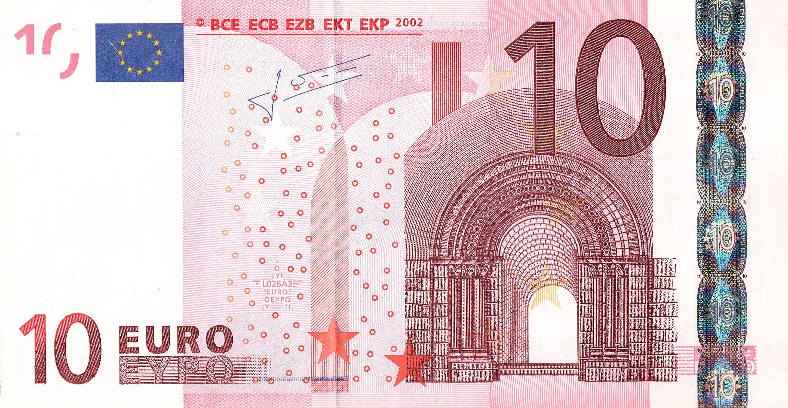
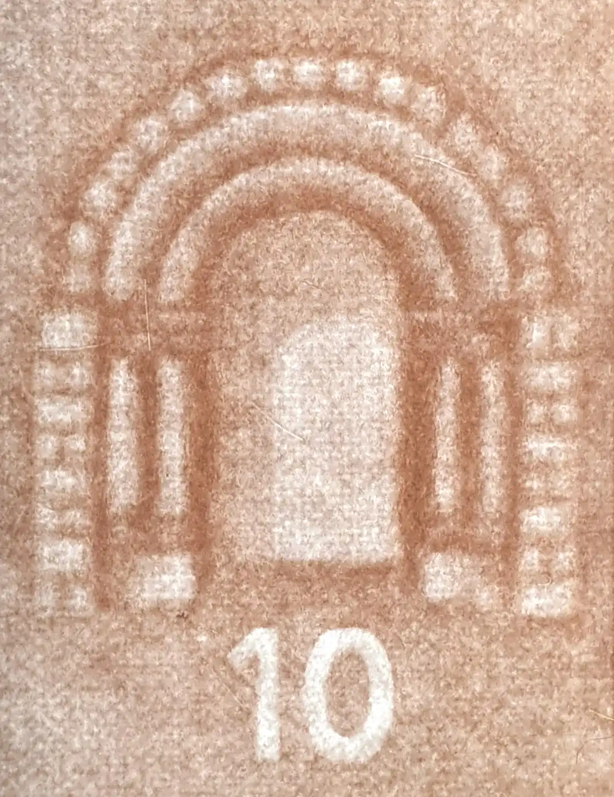
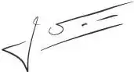
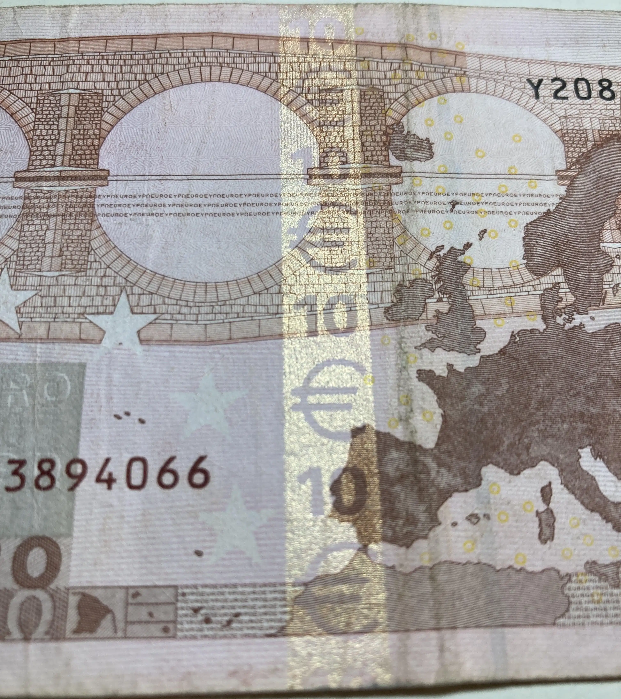
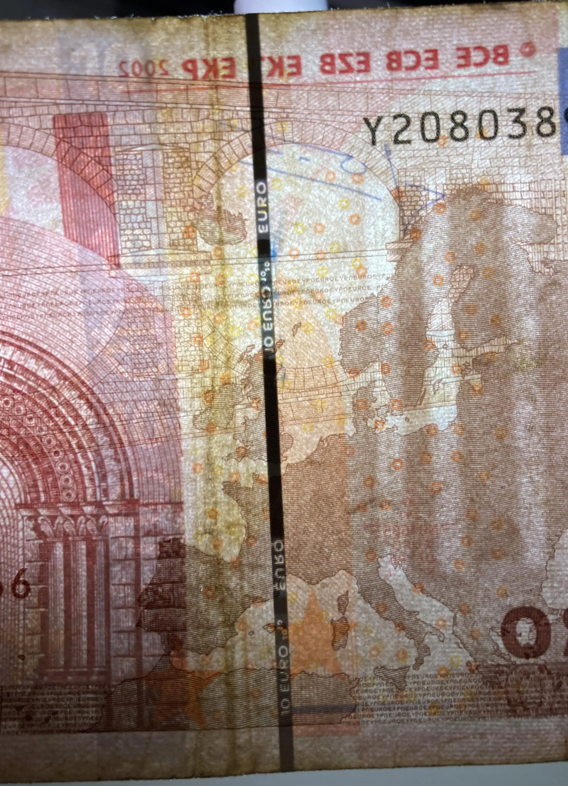
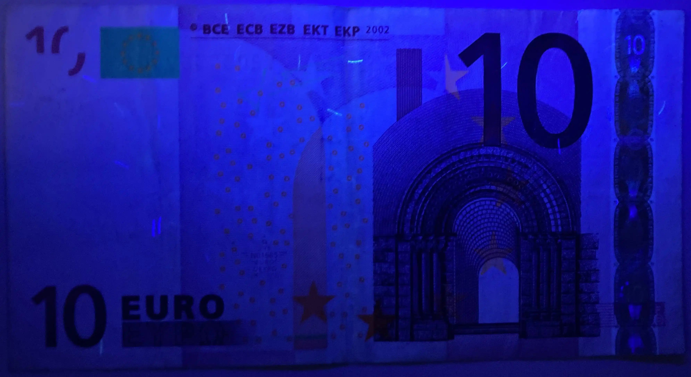
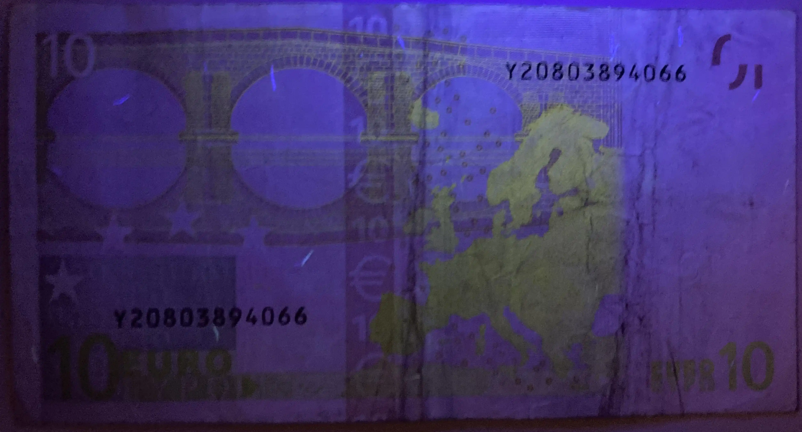
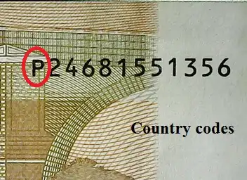

Banknotes EUR
€10 2002-2013
Series: The Ages and Styles of Europe
Obverse
Description
On the front are shown windows and doorways. They symbolise the European spirit of openness and cooperation. The banknote shows the architectural style from the classical period in Europe's history, but does not show any actual existing monuments or bridges.
Scripts
Greek, Latin
Lettering:
BCE ECB EZB EKT EKP 2002
10 EURO ΕΥΡΩ
Reverse

Description
The bridges on the reverse of the Europa banknotes symbolize communication between the people of Europe and between Europe and the rest of the world. The reverse also contains a map of Europe and the stars of the European flag.
Scripts
Greek, Latin
Lettering:
10 EURO ΕΥΡΩ
Watermark
A classical gateway, and the banknotes denomination.
Signatures
Wim Duisenberg (WD) President of the European Central Bank 06/01/1998 - 10/312003
Jean-Claude Trichet (JCT) President of the European Central Bank 11/01/2003 – 10/31/2011

Mario Draghi (MD) President of the European Central Bank 11/01/2011 – 10/31/2019

Security №1
Yellow iridescent stripe on reverse side, inscription "€ 10"
Security №2
This banknote contains a security thread only visible under backlight, inscription "10 EURO".
Security №3
Obverse UV activity (365nm).
Security №4
Reverse UV activity (365nm).
Country & Printer Codes
The central bank that commissioned the printing of a banknote (but not necessarily the country of printing) is indicated by a letter or country code preceding the serial number, as shown here:
On the obverse, a small six-character printing code appears near the left centre. The first letter is the printer code which represents the location at which the banknote was printed.
Obverse
Horizontal Number = 1 letters + 11 digits
First Letter = Ordering Country
* Long Code (Ordering Country)
D Estonia
E Slovakia
F Malta
G Cyprus
H Slovenia
L Finland
M Portugal
N Austria
P Netherlands
S Italy
T Ireland
U France
V Spain
X Germany
Y Greece
Z Belgium
Reverse
Horizontal Number = 1 letters + 5 characters
First Letter = Printer
* Short Code (Printer)
D Finland
E France
F Austria
G Netherlands
H United Kingdom
J Italy
K Ireland
L France
M Spain
N Greece
P Germany
R Germany
T Belgium
U Portugal
Characteristics
Composition: Paper (Cotton fiber)Size: 127 × 67 mm